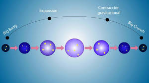

Teoría: Universo Oscilante

¿Qué dice esta teoría?
La teoría del universo oscilante propone que el universo no tuvo un único comienzo. En lugar de eso, el universo pasa por ciclos continuos de expansión y contracción.
Primero el universo se expande, formando galaxias, estrellas y planetas. Después de mucho tiempo, la gravedad podría frenar esa expansión y comenzar una contracción del universo.
Cuando toda la materia vuelve a concentrarse, ocurre un colapso que puede generar un nuevo evento similar al Big Bang, iniciando otro ciclo de expansión.
Evidencia científica
Algunos modelos de la física teórica han explorado la posibilidad de universos que se expanden y luego se contraen. Estas ideas buscan explicar el origen del universo sin necesitar un comienzo absoluto.
Pregunta abierta
Las observaciones actuales indican que el universo se está expandiendo cada vez más rápido. Esto hace difícil que ocurra una futura contracción, por lo que muchos científicos consideran que esta teoría aún necesita nuevas explicaciones.